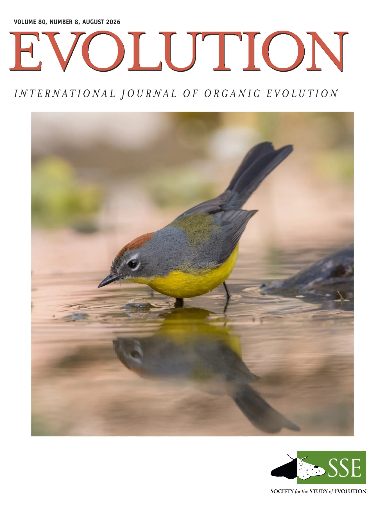

Download my CV
Here (updated June 2026)
Publications
*Shared first-authorship
In review
- Driver R, Marie M, Ko V, Messa P, Sun W, Li R, Lu H-Y, Bennett KFP, Sollitto M, Formenti G, Ojiro I, Mantha N, Matsunami H, Balakrishnan CN. Unique evolutionary radiation of odorant receptors in birds. https://doi.org/10.1101/2025.11.14.688425.
In revision
- Anderson HL, Bennett KFP, Long KM, Brawn JD, O’Dea A, Parsons TJ, Johnson PLF, Braun MJ. Can the Z:A ratio serve as a genomic index of sexual selection? An assessment across space and time in a genus of lekking birds. https://doi.org/10.64898/2026.07.21.739449
2026
- Balakrishnan CN, Toda Y, Ko M-C, Wirthlin ME, Driver RJ, Bolton PE, Miller ET, Mendez-Aranda D, Dikow RB, Frandsen PB, Shogren EH, Bennett KFP, …46 authors…, Baldwin MW. Genomic and physiological changes in a sexually selected and frugivorous bird radiation. Current Biology, 36(12): 3061-3076. https://doi.org/10.1016/j.cub.2026.05.021.
- Céspedes Arias LN*, Bennett KFP*, Campagna L, Wood AW, Bonaccorso E, Cuervo AM, Cadena CD, Lovette IJ, Toews DPL. Diversification and divergence in Myioborus warblers: insights into evolutionary relationships and plumage genetics. Evolution, 80(8): 1703 - 1718. http://doi.org/10.1093/evolut/qpag085.


2025
- Bennett KFP, Wood AW, Baiz MD, Phung L-N, Lovette IJ, Toews DPL. A colorful legacy of hybridization in wood-warblers includes frequent sharing of carotenoid genes among species and genera. PLOS Biology, 23(12): e3003501. https://doi.org/10.1371/journal.pbio.3003501.
- Bennett KFP, Gielow KH, Conner AN, Toews DPL. Genetic confirmation of an “uncommon mourningthroat” (Geothlypis philadelphia x G. trichas): a rare but persistent hybrid warbler. Wilson Journal of Ornithology, 138(2): 303–314. https://doi.org/10.1080/15594491.2025.2584827.
- Bennett KFP, Bolton PE, Brumfield RT, Wilkinson GS, Braun MJ. Impact of a putative riverine barrier on genomic population structure and gene flow in the presence of sexual selection. Evolution, 79(10): 2181–2192. https://doi.org/10.1093/evolut/qpaf146.
- Morrison ES, Pandolfi GP, Aguillon SM, Ali JR, Archard O, Baldassarre DT, Baquero I, Bennett KFP, Bonney KM, Bryant R, …31 authors…, Shutz AJ. AvianLexiconAtlas: A database of descriptive categories of English-language bird names around the world. PLOS ONE, 20(6): e0325890. https://doi.org/10.1371/journal.pone.0325890
2024
- Lim HC,* Bennett KFP,* Justyn NM, Powers MJ, Long KM, Kingston SE, Lindsay WR, Pease JB, Fuxjager MJ, Bolton PE, Balakrishnan CN, Day LB, Parsons TJ, Brawn JD, Hill GE, Braun MJ. Sequential introgression of a carotenoid processing gene underlies sexual ornament diversity in a genus of manakins. Science Advances, 10:eadn8339. https://doi.org/10.1126/sciadv.adn8339.
- Long KM, Rivera-Colon AG, Bennett KFP, Catchen JM, Braun MJ, Brawn JD. Ongoing introgression of a secondary sexual plumage trait in a stable avian hybrid zone. Evolution, 78: 1539-1553. https://doi.org/10.1093/evolut/qpae076.
2021
- Bennett KFP, Lim HC, Braun MJ. Sexual selection and introgression in avian hybrid zones: spotlight on Manacus. Integrative and Comparative Biology, 61: 1291-1309. https://doi.org/10.1093/icb/icab135.
- Bennett KFP,* Evans BS,* Clark JA, Marra PP. Domestic cat abundance and activity across a residential land-use gradient. Frontiers in Ecology and Evolution, 9: 643845. https://doi.org/10.3389/fevo.2021.643845.